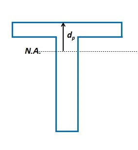
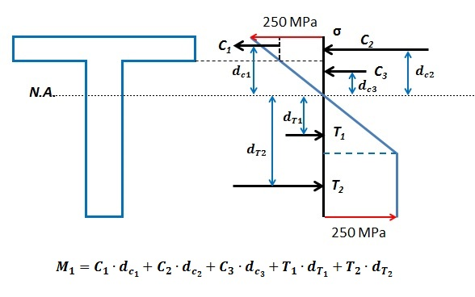

A T section is shown below (drawn not to scale):
The width of the flange bf = 150 mm,
The thickness of the flange tf = 20 mm,
The height of the web hw = 200 mm,
The thickness of the web tw = 30 mm.
The Young's module for the section E = 125 GPa,
The Yielding stress is σY = 250 MPa for both compression and tension.
Please click the "Start" button and follow the instruction to finish the question:
(1) Calculate the bending moment My which will the cause first yielding.
First, calculate the vertical location of the centroid and the second moment of inertia Ixx:
ȳbtm = - mm (rounded to 0.01mm),
Ixx = mm4 (3 significant figures)
Since |ȳtop| < |ȳbtm|, The bottom fiber yields first. At this situation, the stress and strain though the depth of the cross-section is shown as below:
From the equation -My • ȳbtm / Ixx = σY = 250 MPa, we can solve for My
My = kN-m. (rounded to 0.01 kN-m)Please calculate the stress of the top σtop, strain of the top εtop and strain of the bottom εbtm:
σtop = Mpa. (rounded to 0.1 Mpa)εtop = . (rounded to 0.001e-3)
εbtm = . (rounded to 0.001e-3)
Question (1) is finished!
(2) Calculate the bending moment Mp for fully plastic bending.
When fully plastic bending occurs, the N.A is located such that the area above the N.A. equals to the area below the N.A.
Please calculate the distance between the N.A. and the top flange dp:
dp = mm
Please calculate the tensile forct T and the two compressive forces Cf of the flange and Cw of the web:
T = kN.Cf = kN.
Cw = kN.
Therefore we can calcuate Mp by computing the resultant moment of T, Cf and Cw
Mp = kN-M
Question (3) is finished!
(2) Calculate the bending moment M1 for the case where the top of the cross-section just reaches yielding stress σY = 250 MPa.
First we need to calculate the location of the N.A. The stress and strain diagram are shown in the following figure:
Let d be the distance between the top of the flange and the N.A. Let σ2 be the stress at the interface between the flange and the web. The compression force is divided into three parts C1, C2 and C3, and the tensile force is divided into two parts T1 and T2, as shown in the figure above.
These forces can be expressed in terms of d and σ2
C1 = 0.5 × tf × bf × (σY - σ2),
C2 = tf × bf × σ2,
C3 = 0.5 × (d - tf) × tw × σ2,
T1 = 0.5 × d × tw × σY,
T2 = (tf + hw - 2d) × tw × σY.
Note the relationship between d and σ2 is:
d / σY = tf / (σY - σ2)
Solve equation C1 + C2 + C3 = T1 + T2 for d:
d = mm (rounded to 0.01mm)
Therefore we can calculate the components of the compressive and tensile forces: (rounded to 0.01 kN)
Please use d = 75.31 mm and σ2 = 183.61 MPa to calculate
C1 =
C2 =
C3 =
T1 =
T2 =
Thus we can calculate the bending moment M1 by computing the resultant moment of C1, C2, C3, T1 and T2, as illustrated in the following figure:
The bending moment M1 is:
M1 = kN-M (rounded to 0.01 kN-M)